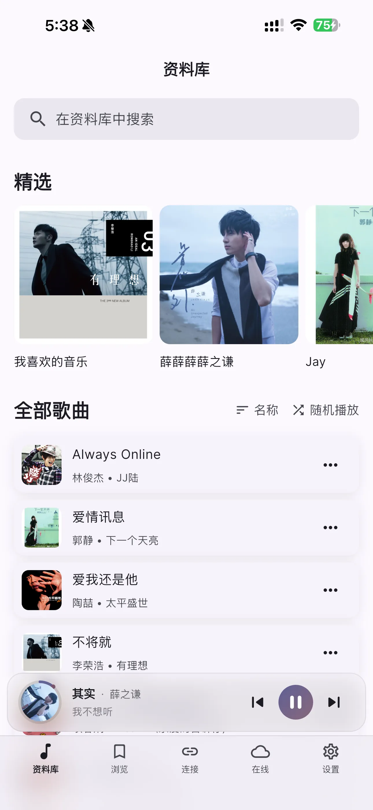
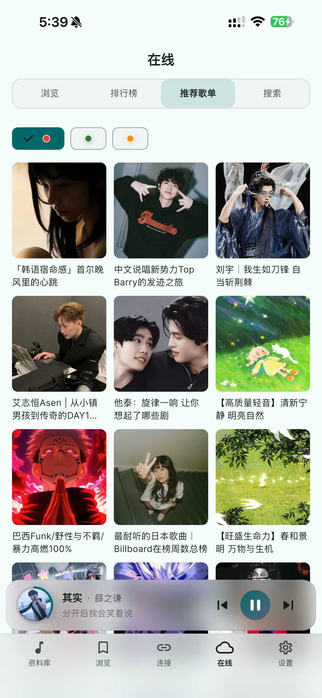
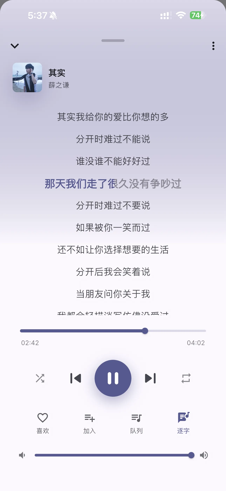
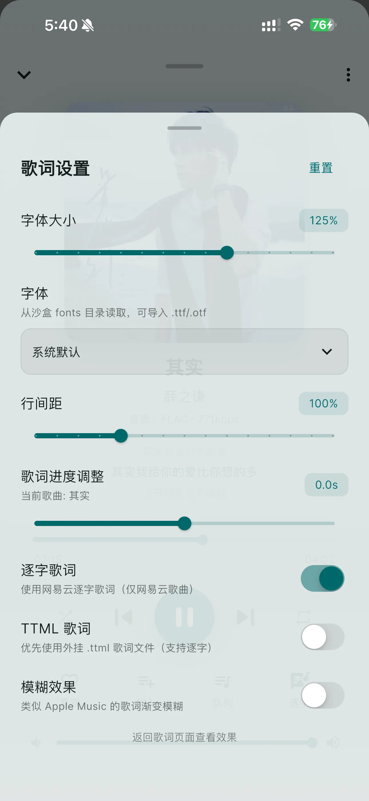
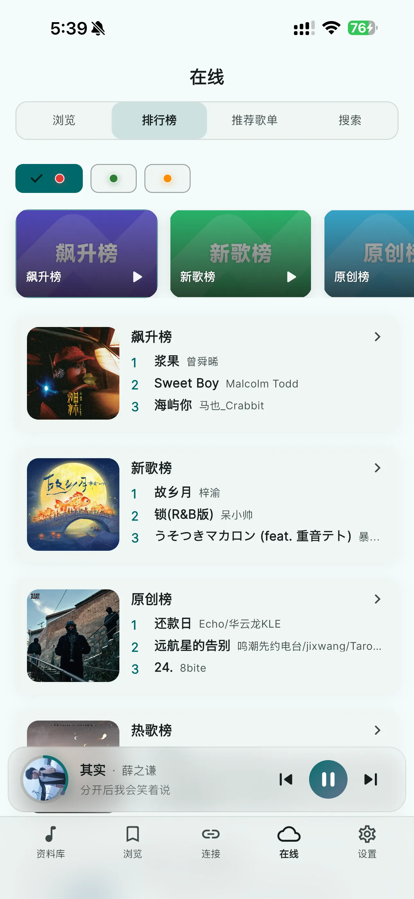

iOS / Android / Navidrome
10+
主流音频格式支持
4
在线音乐平台聚合
14档
歌词字体与行距精调
把本地与在线音乐，合并成一台播放器。
SollinPlayer 提供本地音乐库、四大平台在线聚合、逐字歌词、无损音质、云备份与设备同步。 从收藏到下载，从歌词到主题，全链路围绕重度听歌体验设计。


功能矩阵
基于《功能大全》梳理，官网重点展示 6 组能力：本地库、播放器、歌词、在线音乐、服务器与云备份，覆盖日常听歌到深度管理场景。
本地音乐库
自动扫描与手动刷新，支持 MP3 / FLAC / WAV / AAC / OGG / M4A，提供 A-Z 索引、当前歌曲定位、多选批量管理。
播放器控制
顺序/列表循环/单曲循环/随机播放，支持进度拖动、音量滑块、迷你播放器、睡眠定时器和竖屏/横屏歌词布局切换。
歌词体验
支持内嵌 LRC、外挂 LRC、TTML 逐字歌词与双语翻译。歌词进度可按歌曲独立偏移，支持字体、行距、模糊强度细调。
在线音乐聚合
wyy、QQ、kw、kg 平台搜索与榜单整合，支持歌单收藏、外链导入、单曲与批量下载、音质等级与并发策略控制。
Navidrome 连接
支持多服务器管理、连通性测试、发现页推荐、歌单/收藏同步，以及服务器歌曲与专辑下载到本地。
账户与云备份
邮箱注册登录、验证码校验、设备绑定与远程解绑。支持喜欢歌曲、歌单与在线收藏的云备份、历史恢复与版本管理。
产品界面
从播放、歌词到在线榜单，核心场景都围绕高频听歌操作进行优化，保证信息密度和沉浸感并存。
播放页 / 动态封面
播放进度、歌词同步与控制区一屏联动。

歌词页 / 逐字高亮
支持逐字歌词、行距字体与延迟校准设置。

发现页 / 在线聚合
在线榜单、热歌趋势与多平台内容聚合。

高阶体验
面向进阶用户，提供更完整的歌词、音色与主题控制能力，让播放器更贴近你的个人听感与使用习惯。
赞助专属能力
- 逐字歌词（YRC）卡拉 OK 式高亮
- TTML Apple Music 风格逐字时间轴
- 自动封面取色 + 自定义 RGB 主题色
- 下载并发 1-5 线程可调
- LX 音源数量不受限，多设备绑定
歌词进阶
主题定制
高速下载
多设备
平台与系统支持
| 项目 | 说明 |
|---|---|
| 移动系统 | iOS 12.0+ / Android 6.0+ |
| 在线平台 | wyy、QQ、kw、kg |
| 云服务 | 账户、设备、备份、恢复 |
| 服务器连接 | Navidrome 多服务器切换 |
常见问题
便于官网首发时快速答疑，减少下载页与社群重复解释成本。
这款播放器只支持本地音乐吗？
不是。它同时支持本地库管理与在线平台搜索/下载，也支持连接 Navidrome 私有音乐服务器。
歌词可以逐字同步吗？
支持。可读取 LRC、TTML 等格式，并在可用音源条件下展示逐字高亮与双语歌词。
立即开始你的高品质听歌体验
下载 SollinPlayer，在一处完成本地音乐管理、在线聚合搜索、歌词沉浸播放和云端同步。支持 iOS 与 Android。